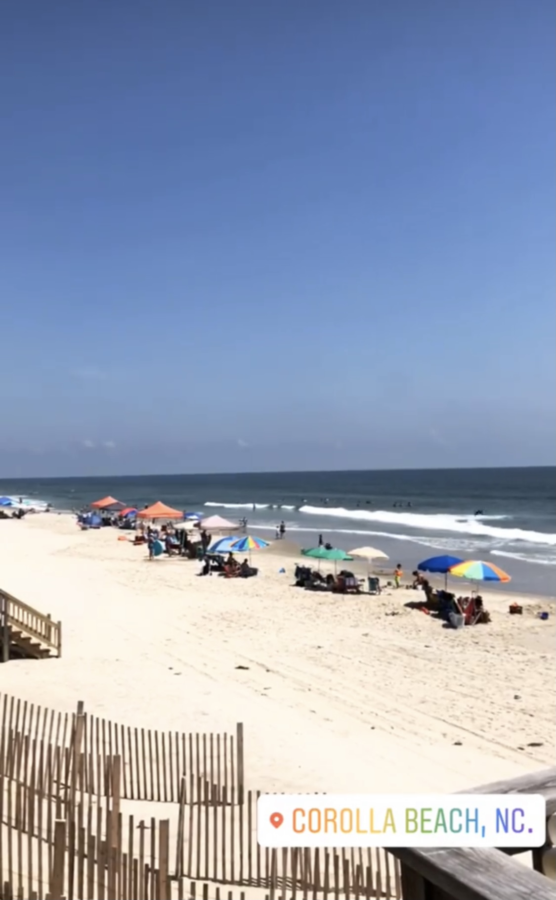
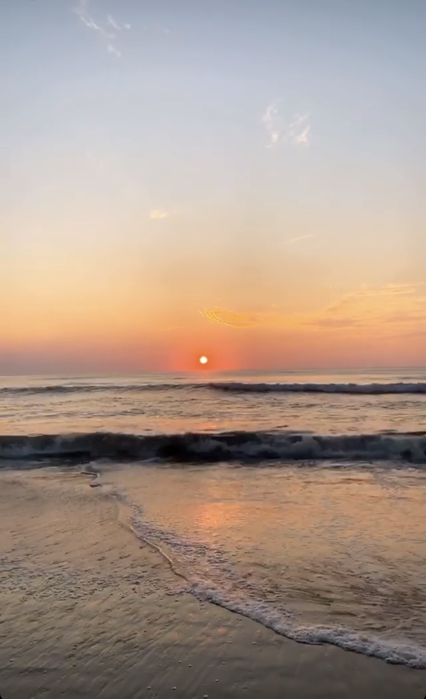
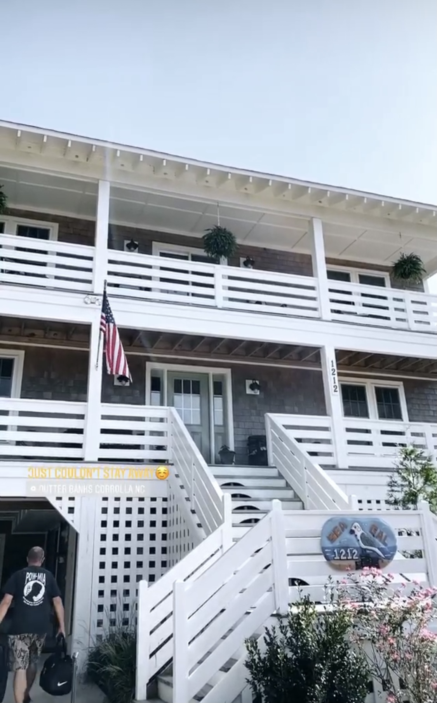

My favorite travel destination is my beach house in Corolla, NC. It is located in the Outer Banks of North Carolina, and is home to only 500 permanent residents. Previouslt a quiet, little-known location, a development boom in the 80's marked Corolla a populat vacation destination. There are 15 public access beaches, all with amazing white sand and clear Atlantic water. Check out some of my favorite pictures I have captured vacationing here!
  